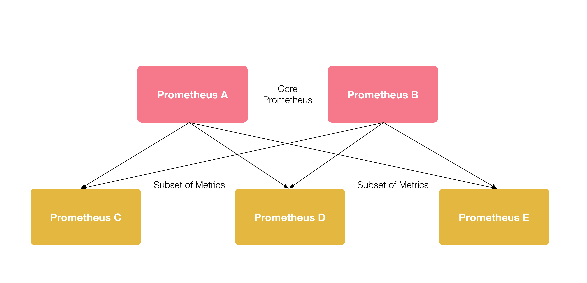

Prometheus 联邦集群
本章节主要讲解联邦集群使用场景介绍与相关配置知识内容
在早期，Prometheus的开发人员就已经考虑到，如何让Prometheus保持简洁和可组合性，一开始，Prometheus的设计就是为了完成一部分工作，并与其他的组件可以完美结合。
-
数据持久化，单个 Prometheus 节点提供持久化存储的功能，但功能单一，不提供分布式存储，不能跨节点复制和自动修复等功能。这意味着，持久化存储保证局限性在了单点上。 不过，为了解决这个问题，Prometheus 提供一个Remote 读写API接口，可用于TSDB数据存储在其他文件系统上。
-
全局视图，由上面可以看出，Prometheus 节点自身本来就是隔离数据存储单。Prometheus 节点可以联邦，但是这样配置了以后，对于维护Prometheus就会增加了一些复杂性，同时 Prometheus的设计也没有提供分布式功能。也就是说，没有简单的途径可以实现TSDB的单一、一致的全局视图。
在Prometheus的发展过程中，出现了联邦集群、Thanos、Influxdb、M3DB等等解决方案，我们本章只讲联邦集群，后续会对Thanos、Influxdb、M3DB的解决方案单独讲解。
自从2.0以后，众所周知，单节点的 Prometheus 很轻松的就可以处理百万级的TSDB，如果规模增加，Prometheus 也同样可以随便的进行扩展。
Prometheus支持使用联邦集群的方式对Prometheus执行扩展，对于大部分监控系统而言，只需要在每一个DC，比如EKS或者GKE，也可以是一个ec2，安装一个Prometheus 节点，就可以采集上千规模的集群， 当然也要做好指标的相关数据优化，不然量级达到几百万甚至几千万的时候，压力是非常大的，如果没有提前做好水平扩展，这是个致命的问题。可以把Prometheus部署在不同的数据中心，这样可以避免网络传输配置的复杂性。

联邦集群架构如上，在每个DC中部署一个单独的Prometheus（C、D、E） 用于采集数据中心的监控指标数据，并 中心节点 Prometheus（A、B）负责聚合多个数据中心的监控指标数据。
每一个 Prometheus 节点都包含一个 federate接口，用于截取一组指定的TSDB监控数据，因此在中心节点Prometheus的A、B需要配置一个采集job，从C、D、E三个数据中心拉取监控指标数据。
分层联邦¶
分层联邦允许 Prometheus 能够扩展到十几个数据中心和上百万的节点。在此场景下，联邦拓扑类似一个树形拓扑结构，上层的 Prometheus 服务器从大量的下层 Prometheus 服务器中收集和汇聚的时序数据。
例如，一个联邦设置可能由多个数据中心中的 Prometheus 服务器和一套全局 Prometheus 服务器组成。每个数据中心中部署的 Prometheus 服务器负责收集本区域内细粒度的数据（实例级别），全局 Prometheus 服务器从这些下层 Prometheus 服务器中收集和汇聚数据（任务级别），并存储聚合后的数据。这样就提供了一个聚合的全局视角和详细的本地视角。
跨服务联邦¶
在跨服务联邦中，一个服务的 Prometheus 服务器被配置来提取来自其他服务的 Prometheus 服务器的指定的数据，以便在一个 Prometheus 服务器中对两个数据集启用告警和查询。
例如，一个运行多种服务的集群调度器可以暴露在集群上运行的服务实例的资源使用信息（例如内存和 CPU 使用率）。另一方面，运行在集群上的服务只需要暴露指定应用程序级别的服务指标。通常，这两种指标集分别被不同的 Prometheus 服务器抓取。利用联邦，监控服务级别指标的 Prometheus 服务器也可以从集群中 Prometheus 服务器拉取其特定服务的集群资源使用率指标，以便可以在该 Prometheus 服务器中使用这两组指标集。
配置联邦¶
scrape_configs:
- job_name: 'federate'
scrape_interval: 15s
honor_labels: true # 自动忽略冲突的指标
metrics_path: '/federate'
# 抓取并汇总他们暴露的任何带 job="prometheus" 标签的序列或名称以 job: 开头的指标
params:
'match[]':
- '{job="prometheus"}'
- '{__name__=~"job:.*"}'
- '{__name__=~"node:.*"}'
static_configs:
#
- targets:
- '192.168.1.221:19090' # C
- '192.168.1.222:19090' # D
- '192.168.1.223:19090' # E
在 Prometheus 服务器中，/federate 节点允许获取服务中被选中的时间序列集合的值。至少一个 match[] URL 参数必须被指定为要暴露的序列。每个 match[] 变量需要被指定为一个不变的维度选择器像 up 或者 {job="api-server"}。如果有多个 match[] 参数，则所有符合的时序数据的集合都会被选择。
从一个 Prometheus 服务器联邦指标到另一个 Prometheus 服务器，配置你的目标 Prometheus 服务器从源服务器的 /federate 节点抓取指标数据，同时也使用 honor_lables 抓取选项（不重写源 Prometheus 服务暴露的标签）并且传递需要的 match[] 参数。 例如，下面的 scrape_configs 联邦 192.168.1.(221/222/223):9090 三台 Prometheus 服务器，上层 Prometheus 抓取并汇总他们暴露的任何带 job="prometheus" 标签的序列或名称以 job、node: 开头的指标。
这种联邦集群应付简单的场景足够了，但是还是有很多局限性，比如无法做到全局视图，对历史数据的存储问题没有从根本上解决，还是必须依赖第三方存储系统，最主要原因Prometheus在设计之初就是定位为实时监控系统。